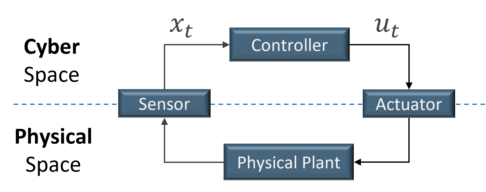

Get Started
Installation
We recommend installing CPSim in a virtual environment. Please refer to Anaconda Documentation for more information. After activating your virtual environment, install CPSim using the following command:
pip install cpsim
(Optional) If you want to use interval arithmetic, install CPSim with the following command:
pip install cpsim[interval]
This will install pyinterval dependency, but only works on Linux.
Minimum Simulation
After installing CPSim, you can write the following code to simulate the behaviours of a continuous stirred tank reactor.
First, we import a built-in nonlinear CSTR model at Line 3. Then, we configure some simulation parameters, such as sampling time \(dt\), at Lines 6-9. At Line 10, we create a simulation object with the model and the parameters.
The main control loop is at Lines 12-16. In each iteration of the loop, it updates the reference state, and evolves the system a sampling time advance.
After simulation, the reference state, output, system state, and control input are stored in the simulation object. Here, we plot the reference state and the output at Lines 26-28.
Basic Concepts
Cyber-Physical System (CPS)
This section shows the system model. In general, a typical CPS architecture is shown in Figure CPS Architecture, including a physical process, controller, sensors, and actuators. The controller controls the physical process to maintain the reference (also known as target or desired) states in a periodic and close-loop manner. At each \(t^{th}\) control step, sensors measure the state of the physical system and send them to the controller. Based on the sensor measurements, the controller obtains the state estimate \(\textbf{x}(t)\) of the physical system and generates control inputs \(\textbf{u}(t)\) according to its control algorithm. The control inputs are then sent to actuators who apply \(\textbf{u}(t)\) to supervise the physical system at a desired (or reference) state. The state of a physical system or the system state \(\textbf{x}(t)\in \mathcal{R}^n\) is a vector of size \(n\) that represents the number of dimensions of the system state (e.g., velocity, electric current, pressure, etc.). The control inputs \(\textbf{u}(t)\in \mathcal{U}\) is a vector of size \(m\) that represents the number of dimensions of the control input (e.g. steering angle, applied voltage, etc.). \(\mathcal{U}\) is the control input range that is usually limited by the actuator’s capability or physical properties, and for instance, the maximum voltage applied on a DC motor is limited by the capacity of the power source. Moreover, the symbol \(\textbf{x}(t)\) denotes the state estimate, while \(\bar{\textbf{x}}(t)\) is the real (true) state of the plant. The symbol \(\textbf{u}(t)\) denotes the control input computed by the controller, while \(\bar{\textbf{u}}(t)\) is the real input to the plant. For easy presentation of equations, we sometimes use \(\textbf{x}_t\) or \(\textbf{u}_t\) to denote \(\textbf{x}(t)\) or \(\textbf{u}(t)\), respectively.
{kind=link}
Data Structures
In CPSim, we use 1-D numpy array to represent a state, output, or control input. The following code shows how these date are initialized in simulation class.
68 def data_init(self):
69 self.inputs = np.empty((self.max_index + 2, self.m), dtype=float) # control inputs
70 self.outputs = np.empty((self.max_index + 2, self.p), dtype=float) # outputs
71 self.states = np.empty((self.max_index + 2, self.n), dtype=float) # actual system states
72 if self.feedback_type == 'output':
73 self.feedbacks = np.empty((self.max_index + 2, self.p), dtype=float) # feedbacks, could be compromised
74 self.refs = np.empty((self.max_index + 2, self.p), dtype=float) # reference states
75 elif self.feedback_type == 'state':
76 self.feedbacks = np.empty((self.max_index + 2, self.n), dtype=float)
77 self.refs = np.empty((self.max_index + 2, self.n), dtype=float) # reference value
Thus, after simulation is done, you can access the data through the simulation object. In 1_CSTR_simulation.py, we show how to access these data at Lines 20-24.
Important
In NumPy, the @ operator means matrix multiplication (Python>=3.5).
We assume \(b\) is a 1-D numpy array, and \(B\) is a 2-D numpy array.
Then, \(b\) is a row vector in b@B, and \(b\) is a column vector in B@b.
Thus, 1-D numpy array can be used to represent both row and column vectors in matrix multiplication.
Q&A
TypeError: ‘max_iters’ is an invalid keyword argument for this function
Line 149 in src/cpsim/controllers/LP_cvxpy.py “max_iter” to “max_iters” or “max_iters” to “max_iter”
NameError: name ‘imath’ is not defined
go to “anaconda3/envs/demo3/lib/python3.8/site-packages/cpsim/models/nonlinear/vessel.py” in your anaconda’s path add “from interval import imath, interval” in line 8.
Meet an error from plot?
Try to enlarge the max_index in settings.py.
Solver failed?
Sorry, somtimes our methods can’t solve the problem. Please change the settings.